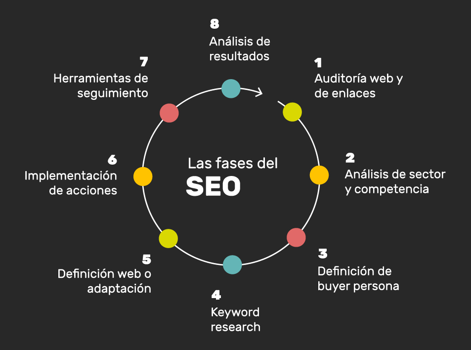
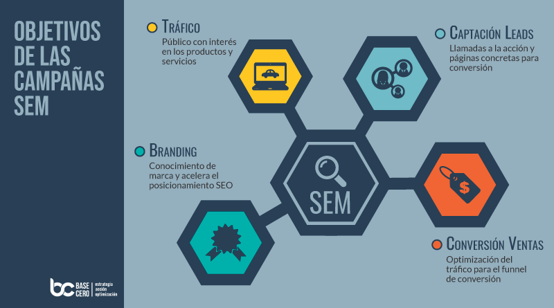
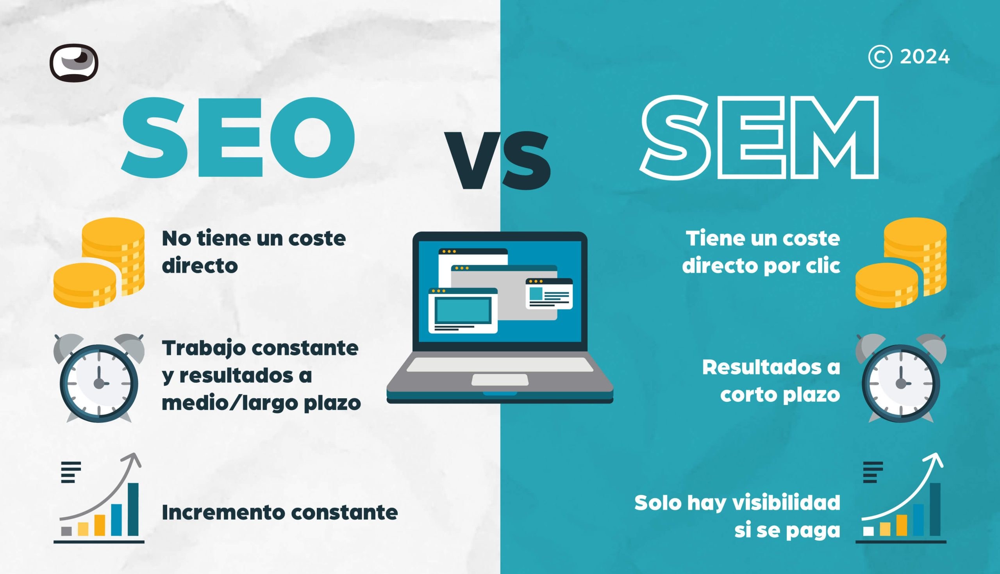

SEO
El SEO (Optimización para Motores de Búsqueda) es el conjunto de técnicas para mejorar el posicionamiento de un sitio web en los resultados orgánicos (no pagados) de buscadores como Google, para aumentar su visibilidad y el tráfico web. Se basa en tres áreas principales: optimizar el contenido para que sea útil para los usuarios, asegurar que el sitio sea técnicamente accesible y rápido para los buscadores, y construir autoridad mediante enlaces de otros sitios web de calidad.

SEM
El SEM (Search Engine Marketing, o Marketing en Motores de Búsqueda) es una estrategia de publicidad online pagada que busca aumentar la visibilidad de un sitio web en los resultados de los motores de búsqueda como Google. A diferencia del SEO (posicionamiento orgánico), el SEM utiliza anuncios de pago por clic para lograr resultados inmediatos y dirigirse a audiencias específicas mediante la segmentación por palabras clave, ubicación, etc.

Visibilidad en resultados
La visibilidad de resultados en posicionamiento web es la medida de qué tan fácil es para los usuarios encontrar un sitio web en los resultados de búsqueda orgánica para un conjunto de palabras clave. Un mayor índice de visibilidad indica que el sitio aparece con más frecuencia en posiciones más altas en los motores de búsqueda, lo que se traduce en más tráfico orgánico y un mayor potencial para atraer a los clientes adecuados.
